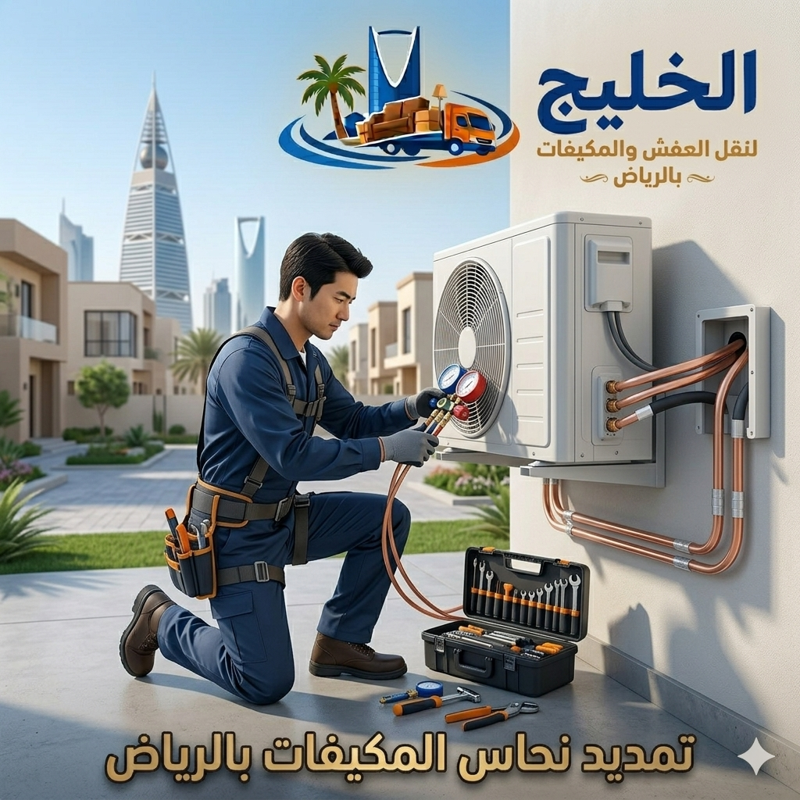

تمديد نحاس احترافي لمكيفات السبليت، فك وتركيب، تعبئة فريون، عزل حراري، وإصلاح جميع الأعطال بأسعار تنافسية وضمان شامل.
استخدام مواسير نحاس أصلية بسمك مناسب لعمر أطول وكفاءة تبريد فائقة.
عزل مواسير النحاس بأعلى جودة لمنع تسرب البرودة وتكثف المياه.
فك وتركيب المكيفات مع تمديد النحاس بدقة عالية وضمان عدم حدوث أي تلف.
هل تحتاج إلى تمديد نحاس مكيفات بالرياض؟ شركة الخليج للمكيفات تقدم لك خدمة احترافية لتمديد مواسير النحاس لمكيفات السبليت، مع فك وتركيب شامل، تعبئة فريون، وعزل حراري متكامل. فنيون ذو خبرة كبيرة يستخدمون أفضل أنواع النحاس ومواد العزل لضمان أعلى أداء تبريد دون أعطال مستقبلية.
نقوم بتمديد النحاس للمكيفات في المنازل، الشركات، والمجمعات السكنية بالرياض، مع الالتزام بالمواعيد وأسعار شفافة. سواء كنت بحاجة لنقل المكيف إلى مكان آخر أو تركيب وحدة جديدة في موقع بعيد عن الوحدة الخارجية، فإن فريقنا المتخصص جاهز لتقديم أفضل الحلول.

النحاس عالي الجودة يضمن نقل غاز التبريد بكفاءة دون تسريب أو فقدان.
تمديد النحاس باحترافية مع لحام متقن يمنع تسرب الغاز ويحافظ على شحنته.
العزل يمنع تكون العرق (التكثيف) ويحمي الأسقف والجدران من الرطوبة.
تركيب نحاس صحيح يقلل الضغط على الضاغط ويطيل العمر الافتراضي.
نقوم بتمديد مواسير النحاس مقاسات 1/4, 3/8, 1/2 إنش حسب نوع المكيف وقدرته، مع استخدام نحاس أصلي 100%.
خدمة متكاملة: فك المكيف من مكانه، تمديد النحاس إلى الموقع الجديد، إعادة التركيب بدقة، وضمان تشغيل مثالي.
استخدام عازل حراري عالي الجودة (أرمافليكس أو ما يعادله) لمنع فقدان التبريد وحماية الأسقف من التكثف.
بعد تمديد النحاس نقوم بشفط الهواء، تعبئة غاز الفريون بالكمية المناسبة وفحص شامل للتسريبات بجهاز إلكتروني.
إصلاح تسريبات النحاس، استبدال المواسير التالفة، وتركيب وصلات جديدة بمعايير فنية عالية.
فني يزور الموقع لقياس المسافة بين الوحدة الداخلية والخارجية واختيار مقاس النحاس المناسب.
فك احترافي للوحدة الداخلية والخارجية مع المحافظة على سلامة الأجزاء.
قص ولحام مواسير النحاس بغاز النيتروجين لمنع الأكسدة، وتركيب العزل الحراري.
إعادة تركيب الوحدات وتوصيل الأسلاك الكهربائية ومواسير الصرف بشكل منظم.
شفط الهواء، تعبئة الفريون، تشغيل المكيف وفحص درجات الحرارة وضمان عدم وجود تسريب.
نستخدم نحاس عالي النقاء مطابق للمواصفات لتحمل ضغط الفريون.
فريق مدرب على أعلى مستوى في تمديد النحاس وفك وتركيب السبليت.
إنجاز العمل في وقت قياسي مع الدقة والالتزام بمواعيد العملاء.
تسعير عادل بدون رسوم مخفية، وعروض خاصة للعقود الكبيرة.
* الأسعار تشمل الضريبة وتختلف حسب نوع المكيف وطول المسافة.
نحن نقدم عروض خاصة للتركيب والتغليف بالإضافة إلى فحص شامل بعد الخدمة، مما يجعلنا خيارك الأول لـ تمديد نحاس مكيفات بالرياض و فك وتركيب مكيفات سبليت مع أفضل ضمان جودة.
نستقبل بلاغاتكم على مدار اليوم، وفريق الطوارئ جاهز.
ضمان على جودة التمديد واللحام وعدم التسريب.
فنيون متنقلون مجهزون بأدوات متطورة يصلون خلال ساعتين.
نقدم تقريرًا مفصلًا عن العمل المنجز وحالة المكيف.
خدمة سريعة – فنيون متخصصون – ضمان شامل على تمديد النحاس والفريون
تبدأ الأسعار من 250 ريال حسب طول المسافة ونوع النحاس، ويتم تحديد السعر بعد المعاينة المجانية.
نعم، نقدم خدمة متكاملة تشمل فك المكيف من مكانه، تمديد النحاس، وإعادة التركيب مع تعبئة فريون وضمان التشغيل.
العزل الحراري مهم جدًا لمنع فقدان التبريد وتكثف المياه على المواسير، ونحن نستخدم أفضل أنواع العزل.
عادةً ما يستغرق من ساعة إلى ساعتين حسب تعقيد المسار وطول التمديد المطلوب.
شركة الخليج للمكيفات – خبراء تمديد نحاس مكيفات بالرياض، فك وتركيب سبليت، تعبئة فريون وصيانة شاملة. اتصل بنا اليوم لضمان تبريد مثالي وأداء يدوم طويلاً.
خدمات صيانة شاملة لمكيفات السبليت تشمل فك وتركيب، تنظيف، تعبئة فريون، وإصلاح الأعطال. اقرأ المزيد
خدمات فك وتركيب احترافية لجميع أنواع المكيفات في الرياض. اقرأ المزيد
تنظيف شامل وصيانة دورية للمكيفات لضمان أداء مثالي. اقرأ المزيد
خدمات نقل الأثاث الآمنة والموثوقة في جميع أحياء الرياض. اقرأ المزيد
خدمات تغليف الأثاث بمواد عالية الجودة لحماية ممتلكاتك. اقرأ المزيد
خدمات تخزين الأثاث الآمنة والمضمونة في مستودعات حديثة. اقرأ المزيد